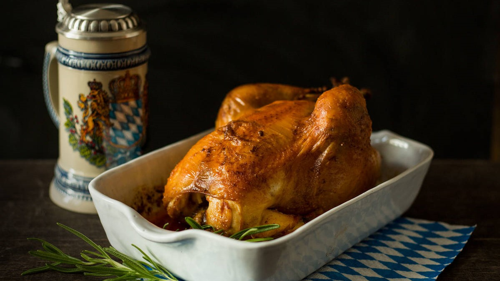
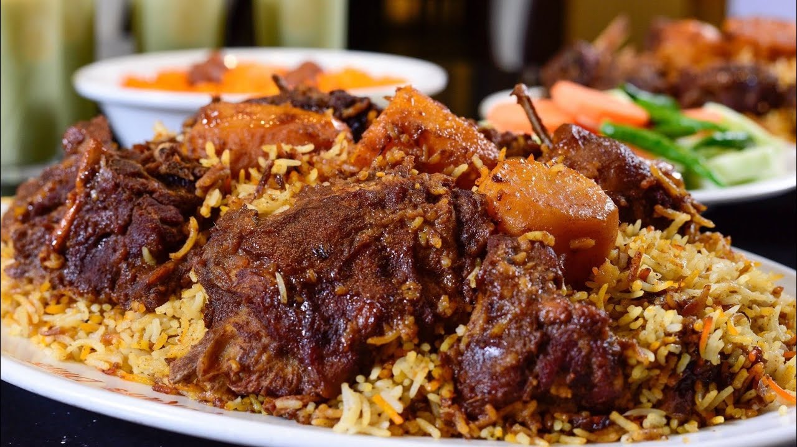
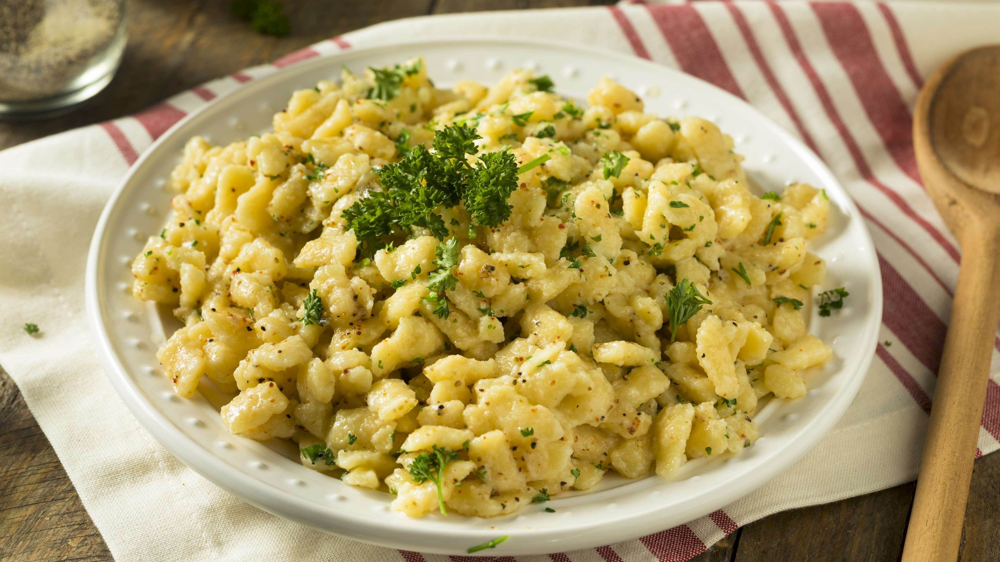
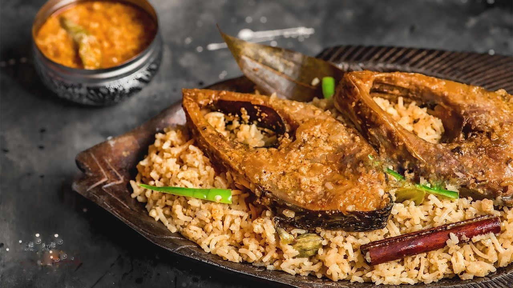

“Pull up a chair. Take a taste. Come join us. Life is so endlessly delicious.”
― Ruth Reichl

“If more of us valued food and cheer and song above hoarded gold, it would be a merrier world.”
― J.R.R. Tolkien

“There are people in the world so hungry, that God cannot appear to them except in the form of bread.”
― Mahatma Gandhi

“Let food be thy medicine and medicine be thy food.”
― Hippocrates

“One cannot think well, love well, sleep well, if one has not dined well.”
― Virginia Woolf, A Room of One's Own